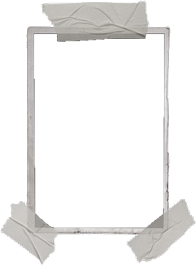
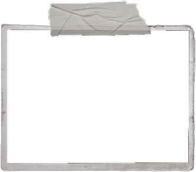
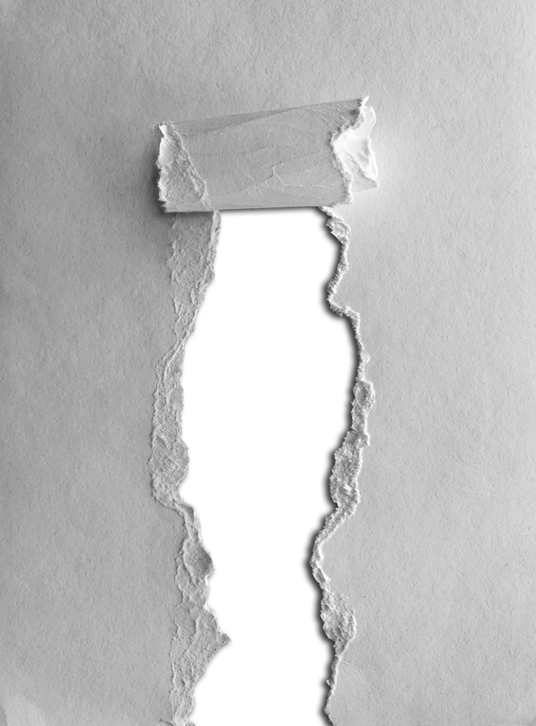
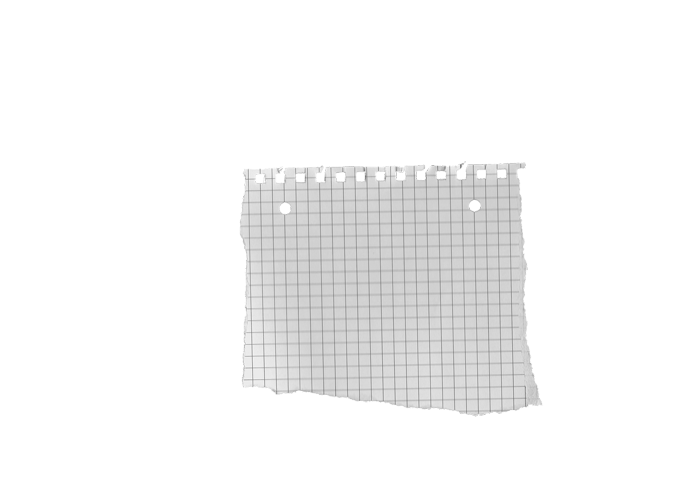
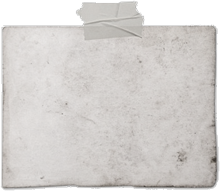
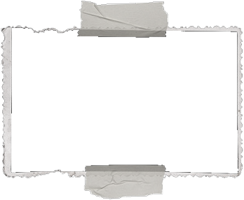
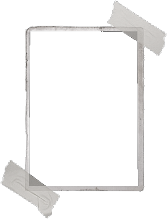
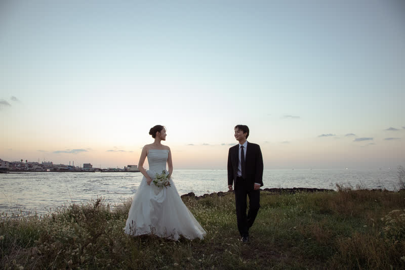
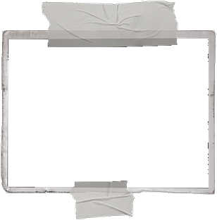
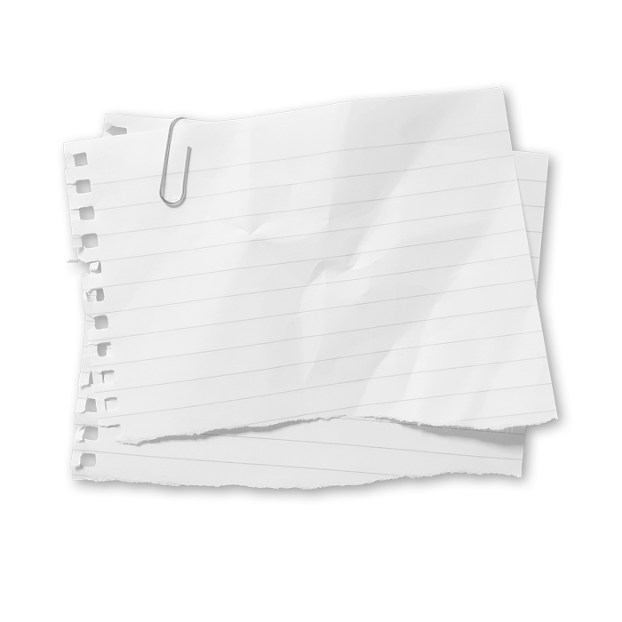

<meta charset="utf-8">
<title>콜라주 커버 스터디</title>
<meta name="claude:viewport-fit-sides" content="cover">
<link rel="preconnect" href="https://fonts.googleapis.com">
<link rel="preconnect" href="https://fonts.gstatic.com" crossorigin>
<link href="https://fonts.googleapis.com/css2?family=Nanum+Pen+Script&family=Gowun+Batang:wght@400;700&display=swap" rel="stylesheet">
<style>
  /* Layout: three phone-sized boards (390x844) side by side, stacking on narrow screens.
     Single look on purpose: a paper desk under daylight, so no dark theme. */
  :root {
    color-scheme: light;
    --desk: #dcd9d2;
    --board: #ebe9e4;
    --ink: #22211f;
    --pencil: #5d5a55;
    --print: #2a2926;
    --hand: 'Nanum Pen Script', 'Apple SD Gothic Neo', cursive;
    --serif: 'Gowun Batang', 'AppleMyungjo', serif;
  }

  body {
    background: var(--desk);
    color: var(--print);
    font-family: var(--serif);
    padding-left: max(16px, env(safe-area-inset-left, 0px));
    padding-right: max(16px, env(safe-area-inset-right, 0px));
    padding-block: 32px 56px;
  }

  .intro {
    max-width: 1260px;
    margin: 0 auto 28px;
    display: grid;
    gap: 6px;
  }

  .intro h1 {
    margin: 0;
    font-family: var(--hand);
    font-weight: 400;
    font-size: 40px;
    color: var(--ink);
  }

  .intro p {
    margin: 0;
    font-size: 14px;
    line-height: 1.7;
    color: var(--pencil);
    max-width: 60ch;
  }

  .studies {
    max-width: 1260px;
    margin: 0 auto;
    display: grid;
    grid-template-columns: repeat(auto-fit, minmax(min(100%, 330px), 1fr));
    gap: 40px 28px;
    justify-items: center;
  }

  .study {
    width: 100%;
    max-width: 390px;
    display: grid;
    gap: 12px;
  }

  .study__caption {
    display: flex;
    align-items: baseline;
    gap: 10px;
  }

  .study__letter {
    font-family: var(--hand);
    font-size: 34px;
    line-height: 1;
    color: var(--ink);
  }

  .study__name {
    font-size: 15px;
    font-weight: 700;
  }

  .study__note {
    margin: 0;
    font-size: 13px;
    line-height: 1.6;
    color: var(--pencil);
  }

  /* The board keeps its 390x844 design size and is scaled to the column width. */
  .viewport {
    width: 100%;
    max-width: 100%;
    aspect-ratio: 390 / 844;
    position: relative;
    overflow: hidden;
    box-shadow: 0 1px 2px rgba(0, 0, 0, 0.12), 0 14px 34px rgba(40, 36, 30, 0.16);
  }

  .board {
    position: absolute;
    left: 0;
    top: 0;
    width: 390px;
    height: 844px;
    transform-origin: 0 0;
    transform: scale(var(--fit, 1));
    background: var(--board);
    overflow: hidden;
  }

  .abs {
    position: absolute;
  }

  /* A real taped photo mount: photo sits in the mount's window, the scanned mount lies on top. */
  .mount {
    position: absolute;
    filter: drop-shadow(0 2px 2px rgba(0, 0, 0, 0.14)) drop-shadow(0 8px 14px rgba(30, 26, 20, 0.12));
  }

  .mount__photo {
    position: absolute;
    object-fit: cover;
    filter: grayscale(1) contrast(1.06) brightness(1.02);
  }

  .mount__art {
    position: relative;
    display: block;
    width: 100%;
    height: auto;
  }

  .scan {
    position: absolute;
    display: block;
    height: auto;
  }

  .hand {
    position: absolute;
    margin: 0;
    font-family: var(--hand);
    font-weight: 400;
    color: var(--ink);
    line-height: 1;
    white-space: nowrap;
    mix-blend-mode: multiply;
  }

  .print {
    position: absolute;
    margin: 0;
    font-family: var(--serif);
    color: var(--print);
    font-size: 12.5px;
    line-height: 1.75;
    letter-spacing: 0.01em;
  }

  .bw {
    filter: grayscale(1) contrast(1.05);
  }

  /* ---------- A: one album page ---------- */
  .a .mount--big { left: 22px; top: 46px; width: 330px; transform: rotate(-2.4deg); }
  .a .mount--small { left: 214px; top: 352px; width: 220px; transform: rotate(7deg); }
  .a .headline { left: 30px; top: 566px; font-size: 64px; transform: rotate(-5deg); }
  .a .names { left: 44px; top: 656px; font-size: 30px; transform: rotate(-2deg); color: var(--pencil); }
  .a .details { left: 40px; top: 722px; }
  .a .pencil-mark { right: 26px; bottom: 30px; font-size: 22px; color: var(--pencil); transform: rotate(-3deg); }

  /* ---------- B: torn open ---------- */
  .b .behind { left: 40px; top: 160px; width: 320px; height: 700px; object-fit: cover; object-position: 50% 40%; }
  .b .sheet { left: -125px; top: -6px; width: 640px; }
  .b .headline { left: 26px; top: 64px; font-size: 52px; transform: rotate(-3deg); }
  .b .names { left: 232px; top: 140px; font-size: 26px; transform: rotate(4deg); }
  .b .scrap { left: 78px; top: 520px; width: 430px; transform: rotate(-6deg); filter: drop-shadow(0 6px 10px rgba(30, 26, 20, 0.18)); }
  .b .scrap-text { left: 236px; top: 640px; font-size: 26px; line-height: 1.2; transform: rotate(-6deg); white-space: normal; width: 150px; }

  /* ---------- C: on the desk ---------- */
  .c .underlay { left: -40px; top: -30px; width: 260px; transform: rotate(9deg); opacity: 0.9; }
  .c .mount--main { left: 30px; top: 92px; width: 352px; transform: rotate(-4deg); }
  .c .mount--side { left: 262px; top: 330px; width: 170px; transform: rotate(10deg); }
  .c .mount--low { left: -26px; top: 452px; width: 230px; transform: rotate(-9deg); }
  .c .note { left: 100px; top: 520px; width: 320px; transform: rotate(4deg); filter: drop-shadow(0 6px 12px rgba(30, 26, 20, 0.16)); }
  .c .note-text { left: 162px; top: 600px; font-size: 25px; line-height: 1.34; transform: rotate(4deg); white-space: normal; width: 220px; }
  .c .scribble { left: 34px; top: 40px; font-size: 30px; transform: rotate(-6deg); }

  @media (prefers-reduced-motion: no-preference) {
    .hand { animation: ink-in 1.1s ease-out both; animation-delay: var(--delay, 0.3s); }
  }

  @keyframes ink-in {
    from { clip-path: inset(-30% 100% -30% -10%); }
    to { clip-path: inset(-30% -10% -30% -10%); }
  }
</style>

<header class="intro">
  <h1>커버 구도 세 가지</h1>
  <p>테이프와 사진 틀, 찢은 종이는 실제로 찍은 소재(Pixabay)입니다. 손글씨는 아직 임시 글꼴이에요. 셋 중 손으로 만든 느낌에 가장 가까운 것을 골라 주세요.</p>
</header>

<main class="studies">
  <section class="study" aria-labelledby="study-a">
    <div class="study__caption">
      <span class="study__letter" aria-hidden="true">A</span>
      <h2 class="study__name" id="study-a">앨범 한 쪽</h2>
    </div>
    <div class="viewport">
      <div class="board a">
        <div class="mount mount--big">
          
          
        </div>
        <div class="mount mount--small">
          
          
        </div>
        <p class="hand headline" style="--delay:0.4s">우리, 결혼해요</p>
        <p class="hand names" style="--delay:1.2s">민준 그리고 서연</p>
        <p class="print details">2027년 4월 17일 토요일 오후 1시<br>더채플웨딩홀 3층 그랜드볼룸</p>
        <p class="hand pencil-mark" style="--delay:1.6s">제주, 여름</p>
      </div>
    </div>
    <p class="study__note">큰 사진 한 장이 주인공이고, 작은 사진은 화면 밖으로 살짝 잘려 나갑니다. 글은 사진 아래 여백에 손으로 적은 느낌입니다.</p>
  </section>

  <section class="study" aria-labelledby="study-b">
    <div class="study__caption">
      <span class="study__letter" aria-hidden="true">B</span>
      <h2 class="study__name" id="study-b">찢어서 엿보기</h2>
    </div>
    <div class="viewport">
      <div class="board b">
        
        
        <p class="hand headline" style="--delay:0.4s">우리, 결혼해요</p>
        <p class="hand names" style="--delay:1.1s">민준 &amp; 서연</p>
        
        <p class="hand scrap-text" style="--delay:1.5s">4월 17일 토요일<br>오후 1시<br>더채플웨딩홀</p>
      </div>
    </div>
    <p class="study__note">종이 한 장을 세로로 찢어 그 틈으로 사진을 보여 줍니다. 꾸밈은 찢은 자국과 모눈종이 쪽지 하나뿐입니다.</p>
  </section>

  <section class="study" aria-labelledby="study-c">
    <div class="study__caption">
      <span class="study__letter" aria-hidden="true">C</span>
      <h2 class="study__name" id="study-c">책상 위에 펼쳐 둔</h2>
    </div>
    <div class="viewport">
      <div class="board c">
        
        <p class="hand scribble" style="--delay:0.3s">봄에 만나요</p>
        <div class="mount mount--main">
          
          
        </div>
        <div class="mount mount--side">
          
          
        </div>
        <div class="mount mount--low">
          
          
        </div>
        
        <p class="hand note-text" style="--delay:1s">우리 결혼해요.<br>4월 17일 토요일 1시,<br>더채플웨딩홀에서<br>기다릴게요. 민준·서연</p>
      </div>
    </div>
    <p class="study__note">사진 세 장과 메모를 책상 위에 툭툭 내려놓은 구도입니다. 크기와 각도를 일부러 들쭉날쭉하게 두었습니다.</p>
  </section>
</main>

<script>
  const fitBoards = () => {
    document.querySelectorAll('.viewport').forEach((viewport) => {
      const board = viewport.querySelector('.board');

      board.style.setProperty('--fit', String(viewport.clientWidth / 390));
    });
  };

  fitBoards();
  window.addEventListener('resize', fitBoards);
</script>
